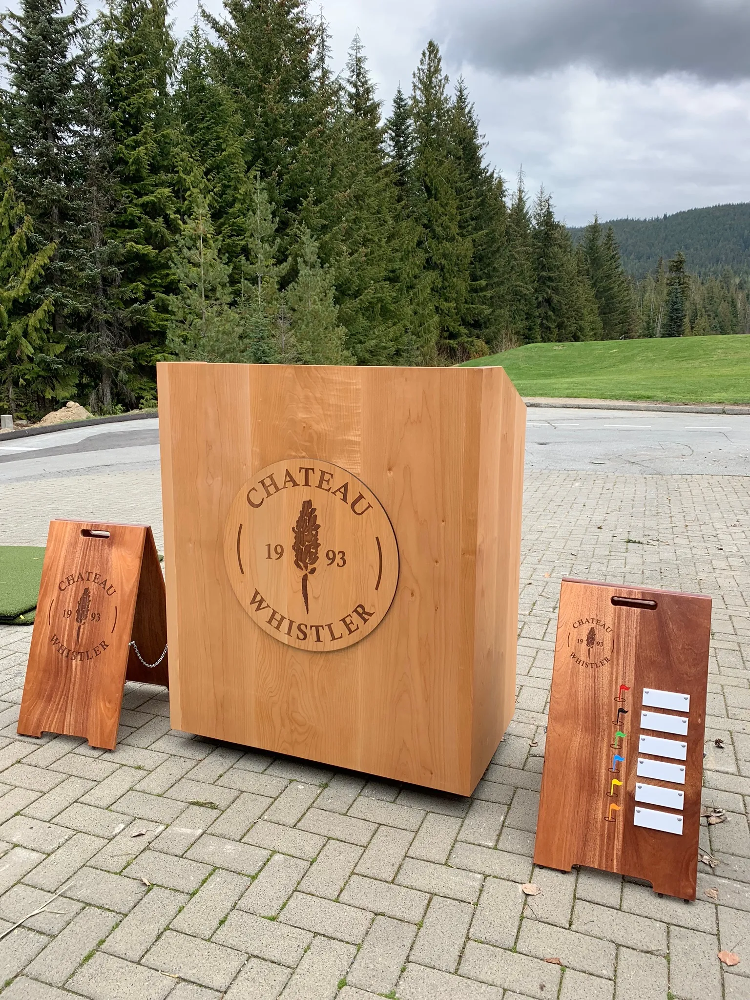
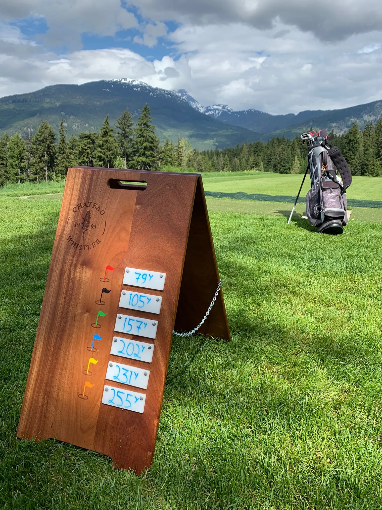
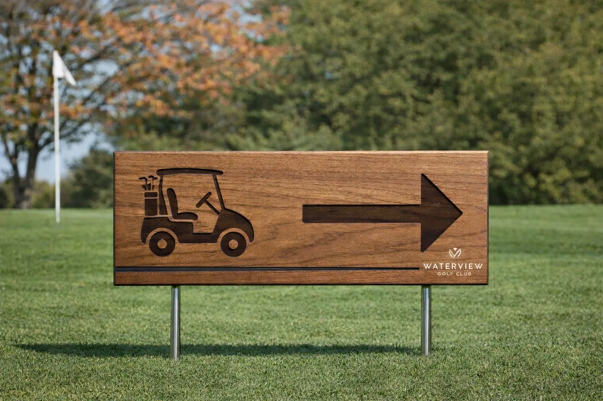
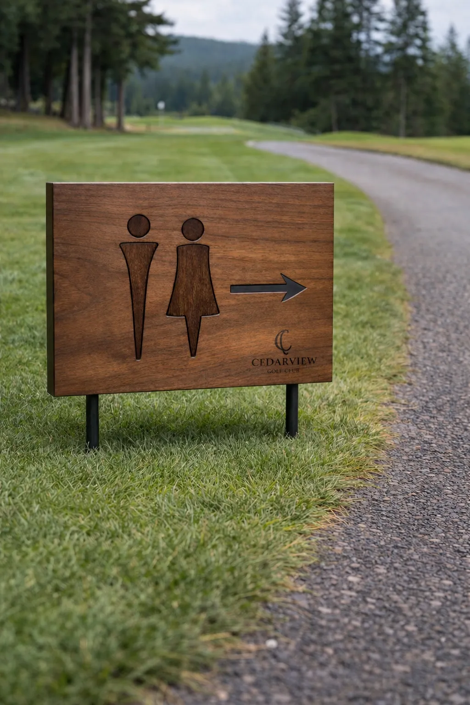

(01) Collections
Course signage
Wayfinding and course identity, designed for your property.

Starter station and course signage -- Fairmont Chateau Whistler. Handcrafted timber construction with engraved course branding.

A-frame yardage marker on the fairway. Colour-coded distance indicators with mountain backdrop.



Course signage designed and built as part of a complete course commission. Our starter stations, wayfinding signs, hole identification markers, and course entry pieces are handcrafted in timber with engraved branding -- each designed to reflect the character of your property.
Interested in commissioning signage for your course?
Email us to start →